Практичні курси · журнал «ДентАрт» 2019 №3
Системна реновація реставрованих зубів. Нижні зуби
SYSTEMIC RENOVATION OF THE RESTORED TEETH. LOWER TEETH
Сергій Радлінський,Українська медична стоматологічна академія, клініка-студія «Аполлонія» (м. Полтава, Україна)
І прямі, і непрямі реставрації зубів мають обмежену довговічність, тому після закінчення терміну служби реставрації мають бути замінені на нові через системне відновлення початкової анатомічної форми всіх зубів з метою відновлення початкової оклюзії, прикусу і балансу м’язів.3-8 У попередній статті описано поняття, принципи, алгоритм реновації та сукупність ознак, що вказують на потребу такого втручання.6 Алгоритм реновації реставрацій після закінчення терміну служби складається із 3-крокової реновації верхніх зубів (ікла – бічні зуби – різці) з досягненням рівномірного змикання всіх бічних зубів і 3-крокової реновації нижніх зубів (бічні зуби – ікла – різці) з досягненням первісного вертикального розміру прикусу, іклового і різцевого ведень. У клінічному прикладі з 13-річною історією показані початковий стан зубів і прикусу до реставрації, стан через 10 років після системної реставрації і техніка реновації верхніх реставрованих зубів (попередня стаття), техніка реновації нижніх зубів, стан зубів і прикусу після завершення реновації, пряме відновлення нижнього другого моляра на абатменті та стан зубів і прикусу через 3 роки, коли завершився гарантійний період на реставрації (ця стаття).
3-крокова реновація нижніх зубів
Реновація всіх нижніх зубів провадиться за тим самим алгоритмом, що й первинна реставрація зубів за патологічного стирання, виконується 3-кроковим алгоритмом і починається завжди з бічних зубів. Відновленням усіх бічних зубів досягається остаточний вертикальний розмір оклюзії/прикусу, відновленням іклів – іклове ведення і відновленням різців – різцеве ведення.
До і/або після ізоляції зубного ряду поверхню зубів, що реновуються, очищають професійною зубною пастою, яка має бути високої абразивності, не повинна містити олій і фтору (ми використовуємо пасту Zircate, Dentsply Sirona, індекс RDA якої дорівнює 300). Потім алмазним кулястим бором знімається поверхневий шар матеріалу з поверхні композиту, що підлягає реновації.
Крок 1 (4): реновація бічних зубів
На нижніх бічних зубах вестибулярні/щічні горбики є опорними (відповідають за вертикальний розмір прикусу), оральні/язичні горбики – напрямними (відповідають за рухи нижньої щелепи). Реновації підлягають стерті поверхні реставрацій: вестибулярна і жувальна поверхні опорних вестибулярних горбиків і жувальна поверхня напрямних оральних горбиків. Висота напрямних горбиків не порушена і може служити надійним просторовим орієнтиром.
Якщо втручання планується в межах реставрацій і в контакті з поверхневою емаллю, то знеболювання не потрібне. Якщо є відкриті ділянки дентину, ознаки дебондингу і втрата апроксимальних контактів, то реновація виконується під мандибулярною анестезією, хоча застосування такого виду анестезії ускладнює перевірку оклюзійних співвідношень.
Вершини опорних горбиків на всіх зубах секстанта стерті і тому зміщені вестибулярно, висота напрямних горбків без змін, скати всіх горбиків на жувальній поверхні згладжені й увігнуті. Ознак відриву композиту від зубних тканин не виявлено.
Третій моляр, зуб 38: ізоляція рабердамом, препарування, адгезивна підготовка і відновлення анатомічної форми горбиків одним прозорим відтінком композиту (відтінок YE наногібридного композиту Esthet-X HD, Dentsply Sirona) з характеризацією фісур (відтінок Brown композиту Enamel Plus, Micerium).
Перший моляр, зуб 36: препаруванням з підсвічуванням виявлено дебондинг на поверхні дентину опорних горбиків, що очікувано для функціонально активного зуба. Адгезивна підготовка, покриття поверхні дентину тонким шаром текучого композиту SDR і відновлення п’яти горбиків у такій послідовності: центральний вестибулярний, дистальний оральний, мезіальний оральний, одночасно дистальний і мезіальний щічний.
Премоляри: реновація показана на прикладі зубів 45, 44, і зазвичай потрібна реновація лише вестибулярних опорних горбиків.
Протягом кожного реставраційного сеансу, що триває 2-3 години, нижня щелепа зміщується дистально, і потрібна 45-хвилинна перерва для повернення нижньої щелепи у звичайне положення, яке дає можливість перевірки і корекції оклюзії. Перевірка і корекція оклюзії робляться триразово після кожної перерви частим і легким змиканням зубів у звичній оклюзії з маркуванням контактів фольгою товщиною 8 мк.
Після реновації першого з бічних секстантів, коли оклюзійні контакти виявляються тільки на відновленому боці і повністю відсутні на протилежному, нижня щелепа автоматично зміщується в напрямку відновленої сторони... Тому на цьому етапі ми визначаємо рівномірність оклюзійних контактів лише уздовж відновленого бокового секстанта зубного ряду.
Після реновації другого з бічних секстантів ми визначаємо спочатку рівномірність оклюзійних контактів уздовж зубного ряду, потім симетричність позиції нижньої щелепи щодо збереження співвідношення верхніх/нижніх зубів по середній лінії і, на завершення, через корекцію анатомічної форми жувальної поверхні всіх зубів усуваємо всі оклюзійні контакти на жувальній поверхні напрямних горбиків і зовнішній поверхні опорних горбиків, зберігаючи марковані контакти тільки на жувальній поверхні опорних горбиків.
Крок 2 (5): реновація іклів
Праворуч і ліворуч горбики іклів були замінені повністю, оскільки оклюзійний стрес внаслідок функціональної активності цих зубів призводить до дебондингу на поверхні дентину.
В оклюзії нижні ікла мають бути симетрично в легкому контакті з верхніми іклами, і тепер можна провести попередню перевірку іклового ведення, отримано остаточний простір для реновації нижніх різців.
Крок 3 (6): реновація різців
Реновація нижніх різців провадиться за тим же алгоритмом, що й реновація іклів, з контролем висоти коронок за допомогою оклюзійного дзеркала. З топографії препарованого дентину видно, що до реставрації 10 років тому нижні різці були в повороті.
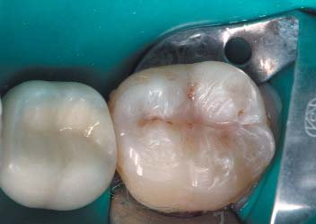
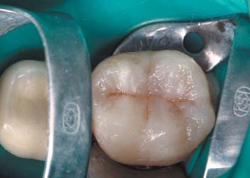
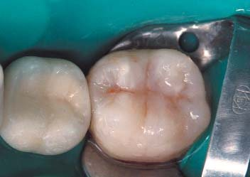
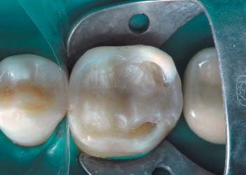
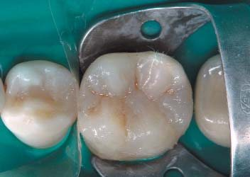
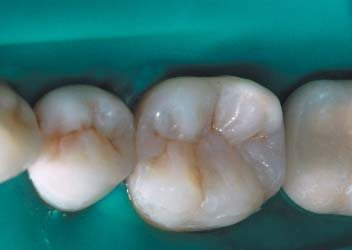
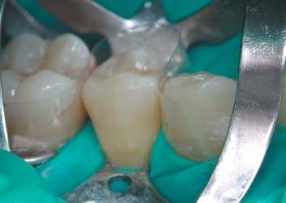
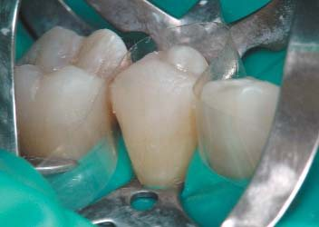
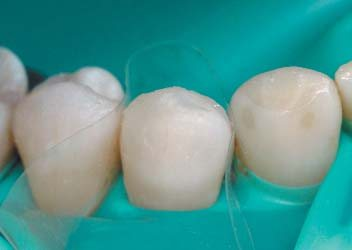
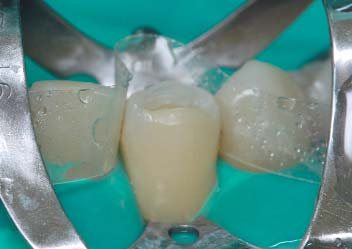
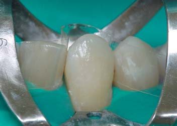
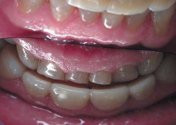
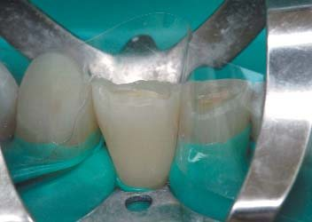
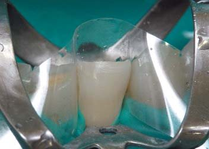
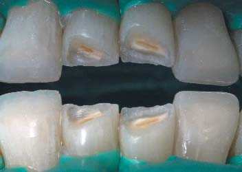
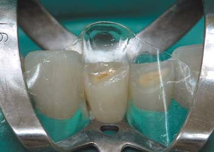
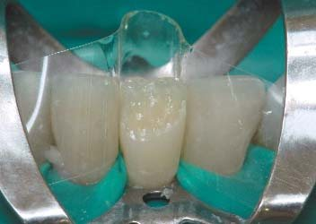
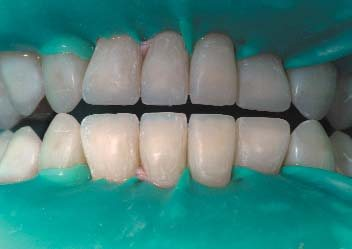
Вигляд зубів і прикусу після реновації
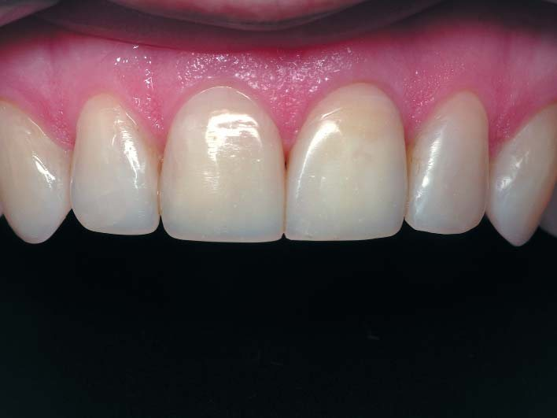
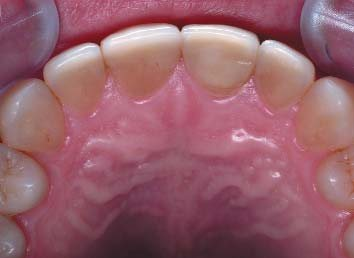
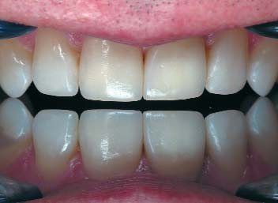
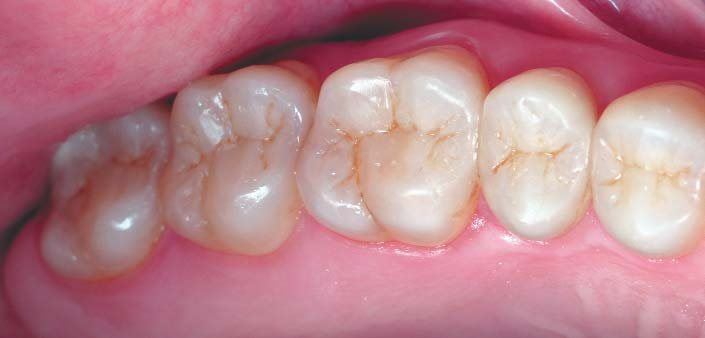
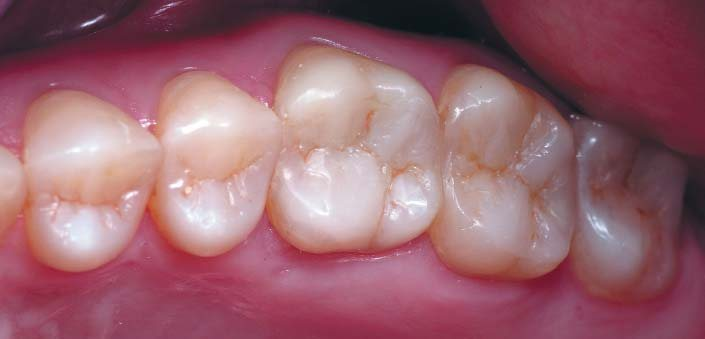
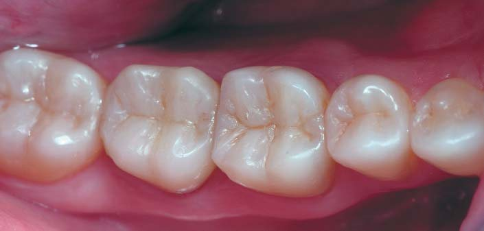
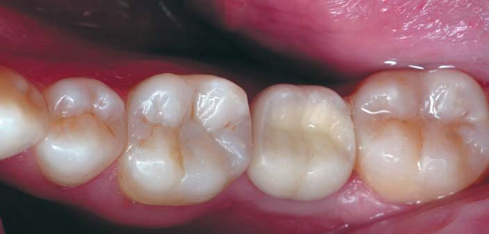
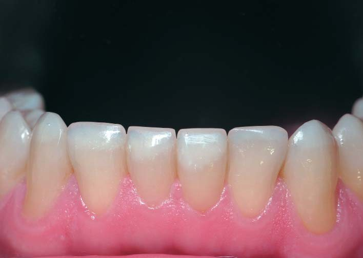
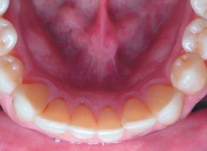
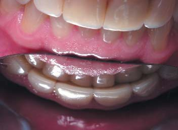
Верхні передні зуби: усі різці, реставровані 10 років тому, мають прийнятні анатомічну форму і крайове прилягання реставрацій до зубних тканин, анатомічна форма зуба 22 зі скоригованим ріжучим краєм повторює анатомічну форму зуба 12.
Верхні ікла, горбики яких були замінені повністю у зв’язку з функціональним дебондингом, домінують у фронтальній ділянці, і це було компромісне рішення – відмовитися від реновації реставрованих різців після закінчення терміну служби.6
Верхні бічні зуби праворуч і ліворуч: відновлені в коректній анатомічній формі, вершини оральних опорних горбиків позиціоновані посередині між екватором зуба і поздовжньою фісурою, усі вестибулярні напрямні горбики позиціоновані по краю жувальної поверхні, на перших молярах добре виражена Crista obliqua, яка є важливим функціональним і оклюзійним елементом.
Нижні бічні зуби праворуч і ліворуч: анатомічна форма коректна і функціональна, хоча невеликі відмінності в анатомії жувальної поверхні перших молярів і других премолярів добре видно.
Звичайно, жувальна поверхня зуба 37 на абатменті не відповідає проекту, і для реновації цього зуба в прямій реставрації є два шляхи: виконати або жувальну поверхню з композиту на адгезивно підготованій поверхні існуючої кераміки, або коронку з композиту на новому індивідуально виготовленому абатменті. У будь-якому випадку це має бути жувальна поверхня з того ж композиту, яким відновлено всі бічні зуби, для того, щоб уникнути дисбалансу оклюзії через кілька років внаслідок нерівномірного зношування. Ми обрали другий шлях – виготовлення нового індивідуального абатмента під реставрацію композитом у прямій техніці.
Нижні передні зуби: різці та ікла мають правильні анатомічну форму і розміри, штучна і природна поверхні зубів не відрізняються за кольором, проте внаслідок операційного пересихання зубних тканин визначаються світліші ділянки на центральних різцях.
Ріжучі краї товщиною 1,3 мм повинні забезпечувати легке відкушування. Оклюзійні контакти між передніми зубами в межах норми, верхні і нижні різці збігаються по середній лінії.
Ясенний край і міжзубні сосочки справді блідо-рожевого кольору і мають вигляд абсолютно інтактних.
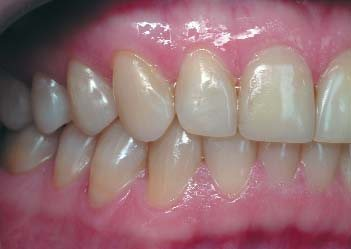
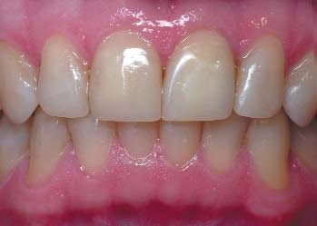
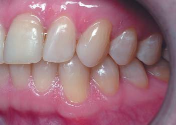
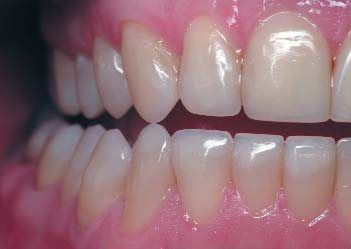
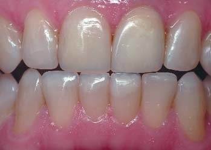
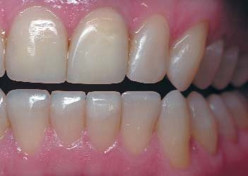
Прикус у звичному змиканні визначається як ортогнатичний нейтральний: середня лінія нижнього зубного ряду збігається із середньою лінією верхнього зубного ряду, сагітальна сходинка між іклами праворуч і ліворуч однакова у фронтальній проекції, у бічних проекціях визначається фісурно-горбиковий контакт між верхніми і нижніми бічними зубами і нейтральне співвідношення перших молярів.
Передня позиція оклюзії: обидва верхні центральні різці в домінуючому контакті з нижніми різцями, блокуючі контакти відсутні, і тому така оклюзія прийнятна, незважаючи на збереження колишньої форми центральних різців.
Права позиція оклюзії: домінуюче змикання іклів, блокуючі контакти відсутні.
Ліва позиція оклюзії: домінуюче змикання іклів, блокуючі контакти відсутні.
Відновлення зуба 37 на абатменті
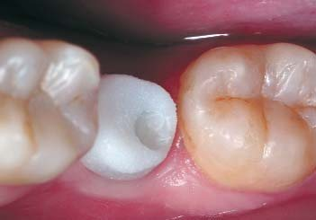
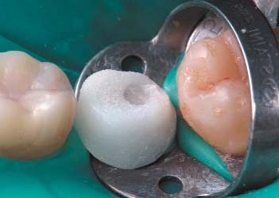
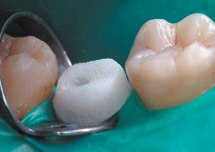
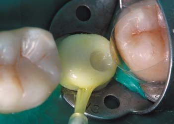
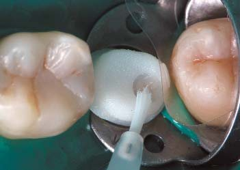
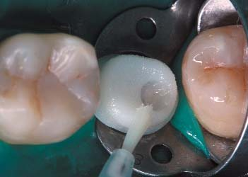
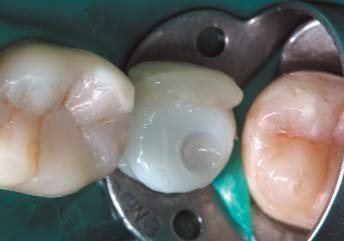
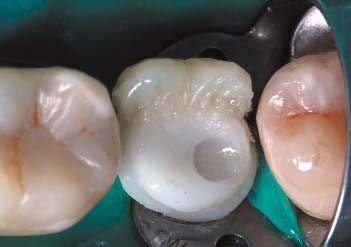
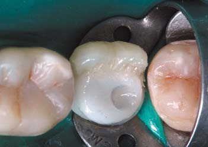
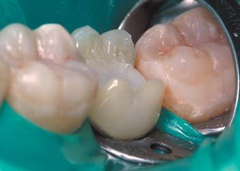
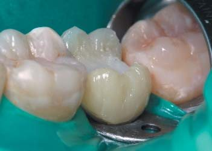
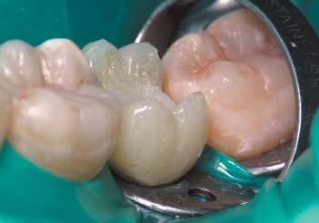
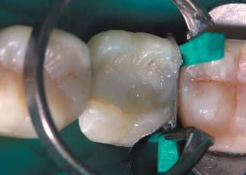
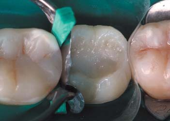
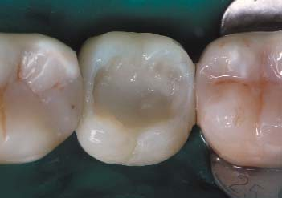
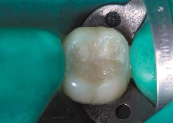
На завершення реновації зубів і зубних рядів була відновлена коронка зуба 37 на одиночному абатменті тими самими матеріалами, якими були відновлені всі зуби. Пряме відновлення композитом коронки зуба в адгезивной техніці складніше для оператора, ніж виготовлення коронки в лабораторії, але має чітку мету – забезпечити в майбутньому рівномірне зношування жувальних поверхонь зі збереженням оклюзійного і м’язового балансу (зуб з природним коренем і зуб на імплантаті мають різну рухливість).4
Основа виготовленого з оксиду цирконію індивідуального абатмента за формою нагадує перетин коронки відсутнього зуба по шийці, уступ спроектований максимально широким, після фіксації абатмента на імплантат гвинтовий канал був загерметизований композитом. При ізоляції рабердамом краї абатмента виділені за допомогою клампа для візуального контролю з’єднання композиту з керамікою.
Адгезивний протокол для кераміки передбачав протравлювання поверхні, яка покривається композитом, гідрофтористою (плавиковою) кислотою протягом 3 хвилин, далі 2-хвилинне змивання кислоти, 3-кратне нанесення силану на цю поверхню з висушуванням кожного шару, внесення, експозицію, видалення розчинника і полімеризацію однокомпонентного адгезиву XP-bond (Dentsply Sirona) з подальшим покриттям усієї поверхні текучим композитом SDR. Непрозорий і світлий керамічний абатмент добре імітує предентин природного зуба за кольором, а текучий композит буде механічно захищати адгезивний шар від циклічних оклюзійних навантажень.
Далі мікрогібридним композитом замість дентину і наногібридним замість основної та поверхневої емалі було відновлено оральну стінку зуба 37, орієнтуючись на оральні поверхні, і вестибулярну стінку, орієнтуючись на вестибулярні поверхні сусідніх зубів. Таким чином, довільний дефект був перетворений на дефект MOD.
Дистальна і мезіальна контактні поверхні послідовно були відновлені трьома композитами (текучий, мікрогібрид і наногібрид) за допомогою системи секційних матриць Palodent (Dentsply Sirona). Вертикально встановленими клинами блоковано простір для оральних абразур, які за анатомічними особливостями бічних зубів повинні бути більші, ніж вестибулярні. У результаті дефект MOD було переведено в оклюзійний дефект (дефект Класу I).
Оскільки тривала відсутність зуба 37 призвела до деформації зубного ряду, частково компенсованої при реновації жувальної поверхні антагоністів, перед завершенням відновлення зуба на абатменті зроблено перерву на 45 хвилин, після чого були відкориговані в оклюзії висота і позиція горбиків зуба, що реставрується.
Потім зуб 37 знову ізольований рабердамом, проведено очисне протравлювання ортофосфорною кислотою, і поверхня дефекту підготована однокомпонентним адгезивом XP-bond. Послідовно в три шари (основний дентин, основна емаль і поверхнева емаль) було відновлено жувальну поверхню зуба 37 по горбиках із завершальною характеризацією фісур композитним барвником Brown (Micerium) та обов’язковим рентгенконтролем.
Вигляд зубів і прикусу через 3 роки після реновації
Фотореєстрація стану зубів і прикусу через 3 роки після реновації реставрацій, що становить вже 13 років після початкового системного відновлення зубів і прикусу, проведена перед черговою плановою професійною гігієною і на завершення гарантійного періоду.
Будь-яких скарг на чутливість після реновації реставрованих зубів і проблеми з пережовуванням їжі немає.
3 роки становлять гарантійний період виявлення прихованих дефектів конструкцій реставрованих зубів і виконання реставрацій, усі корекції реставрованих зубів протягом гарантійного періоду робляться за рахунок клініки.
Після завершення терміну дії гарантії відновлені зуби і прикус супроводжуються протягом терміну служби власне реставрацій, що становить 10 і більше років. Усі корекції реставрованих зубів протягом терміну служби робляться за рахунок пацієнтів.
Професійна гігієна включає огляд стану зубів і прикусу, видалення під’ясенних відкладень ультразвуковим магнітостриктивним скейлером Cavitron SPS (Dentsply Sirona), очищення всіх поверхонь зубів професійною пастою Zircate (Dentsply Sirona), індекс RDA 300. І поскільки внаслідок очищення професійною пастою з високою абразивністю поверхня наногібридного композиту втрачає свій блиск, професійна гігієна завершується стандартно поліруванням усіх поверхонь зубів полірувальними пастами Prisma Gloss і Prisma Gloss Extra Fine (Dentsply Sirona), а також полірувальними щітками Occlubrush (Kerr Hawe Neos) для відновлення блиску поверхні композиту. Полірована природна емаль блищить яскравіше, ніж звичайно, і оцінювальним критерієм якості полірування поверхні реставрацій є візуальна відсутність різниці з блиском полірованої емалі.
На цих фотографіях слід оцінювати передусім зміну форми реставрацій внаслідок стирання, наявність розкритих повітряних пор на поверхні композиту, розшарувань і відколів реставрацій, уражень зубних тканин внаслідок вторинного карієсу і порушення з’єднання реставраційних матеріалів із зубними тканинами у вигляді оптичної межі внаслідок дебондингу.
Як результат, пошкодження реставрованих зубів внаслідок вторинного карієсу і дебондингу відсутні, але є невеликі майданчики стирання на молярах внаслідок адаптації реставрованих зубів в оклюзії.
Верхні передні зуби в оклюзійному дзеркалі показують відсутність контакту центральних різців з площиною дзеркала. Однак якщо центральні різці мають домінуючі контакти в передній позиції оклюзії, то таке відхилення від ідеалу вважається відхиленням у межах норми.
Нижні передні зуби становлять рівну дугу. Відсутні сходинки стирання на піднебінній поверхні верхніх різців і трикутні майданчики стирання на вестибулярній поверхні нижніх різців, що свідчить про нормальне співвідношення верхніх і нижніх передніх зубів.
Прикус: вид праворуч, по центру і ліворуч демонструє повне змикання зубних рядів, а в ключових позиціях оклюзії – повне роз’єднання зубних рядів з домінуючими контактами між функціонально активними зубами.
Висновки
У попередній статті6 описані поняття, принципи та клінічна техніка реновації реставрованих зубів, а також показані 3-крокова реновація всіх верхніх зубів, прийоми і послідовність інтеграції зубів в оклюзії.
У цій статті показані 3-крокова реновація всіх нижніх зубів, стан реставрованих зубів після реновації та через 3 роки після завершення гарантійного періоду.
Просте відновлення анатомічної форми стертих зубів доступне у вільній техніці реставрації без попереднього моделювання (мок-ап/вокс-ап), покладаючись на збережені орієнтири форми коронок і топографію зубних тканин. Чим менша втрата зубних тканин, тим легше відтворюється початкова анатомічна форма зубів.
Альтернативні техніки прямої реставрації передбачають попереднє воскове моделювання зубів і прикусу та перенесення форми зубів на зуби, що реставруються, за допомогою силіконових індексів.8,9
Молдинг-техніка: по кожному бічному секстанту воскової моделі створюють 2 силіконових індекси (оральний і вестибулярний) з жорсткого силіконового матеріалу, за допомогою яких відновлюють зовнішню форму оральних і вестибулярних горбиків жувальних зубів відповідного секстанта, і потім уже у вільній техніці відновлюють жувальну поверхню.
Шелл-техніка: по кожному бічному секстанту воскової моделі створюють 1 силіконовий індекс з прозорого силікону на весь секстант, а потім за допомогою композиту в адгезивній техніці переносять анатомічну форму зубів на відповідний секстант зубного ряду.
Чим менша втрата зубних тканин, тим ширші показання для вільної техніки прямої реставрації! Критерієм межі між нормою і патологією ми вважаємо наявність ділянок точково відкритого дентину: стирання в межах емалі можна вважати віковою нормою, точково відкритий дентин – це вже патологічний стан, і тому вимагає лікарського втручання.
Разом з пацієнтом було вирішено провести реновацію реставрацій за сукупністю ознак і після закінчення терміну служби реставрацій з ревізією з’єднання реставрацій із зубними тканинами і повною заміною реставрацій в разі виявленого дебондингу в конструкції реставрованого зуба.
Відновленням анатомічної форми нижніх зубів завершено реставрацію всіх зубів і прикусу за 2 етапи і 6 кроків, і якщо на першому етапі головна увага в оклюзії зверталася лише на симетричність прикусу, де нижній зубний ряд був своєрідним прикусним шаблоном, то після реновації нижніх зубів уся увага була сконцентрована на отриманні коректних рухів нижньої щелепи в оновленому вертикальному розмірі прикусу.
Наша концепція системного підходу до відновлення анатомічної форми зубів і прикусу при патологічному стиранні ґрунтується на перевіреному положенні, що втрата вертикального розміру оклюзії і зміна прикусу відбуваються лише за рахунок стирання зубних тканин і реставрацій. Тоді шляхом простого відновлення первісної анатомічної форми зубів можна досягнути початкового вертикального розміру оклюзії і прикусу, відновити баланс м’язів, повернути правильну позицію суглобових головок у суглобах і нормалізувати постуру. Зуби – первинні, прикус – вторинний, скронево-нижньощелепні суглоби, баланс м’язів і постура – третинні!
Хоча все в організмі, звичайно, має зворотний зв’язок...
Література
- Грютцнер А. ИксПи Бонд Универсальная адгезивная система для техники тотального протравливания // ДентАрт. – 2007. – №2. – С. 49-57.
- Дичи Д. Беспрепаровочная превентивная реабилитация зубов при стираемости в свободной технике по восковой модели // ДентАрт. – 2019. – №1. – С. 5-15.
- Радлинский С. Системное восстановление высоты всех зубов при повышенной стираемости // ДентАрт. – 2007. – №3. – С. 38-48.
- Радлинский С. Прямая реставрация зубов на абатменте // ДентАрт. – 2016. – №4. – С. 4-13.
- Радлинский С. Синхромиография в системном восстановлении окклюзии // ДентАрт. – 2018. – №2. – С. 35-54.
- Радлинский С. Системная реновация реставрированных зубов. Верхние зубы // ДентАрт. – 2019. – №2. – С. 15-28.
- Dietschi D. Optimizing Smile Composition and Esthetics with Resin Composites and Other Conservative Esthetic Procedures // EJEDE. – 2008. – Vol 3. – N 1. – P. 274-289.
- Dietschi D. A Comprehensive and Conservative Approach for the Restoration of Abrasion and Erosion. Part I: Concepts and Clinical Rationale for Early Intervention Using Adhesive Techniques // EJEDE. – 2011. – Vol 6. – N 1. – P. 2-15.
- Dietschi D. A Comprehensive and Conservative Approach for the Restoration of Abrasion and Erosion. Part II: Clinical Procedures and Case Report // EJEDE. – 2011. – Vol 6. – N 2. – P. 142-159.
- Robertson T.N., Heymann H.O., Swift E.J. Sturdevant’s Art & Science of Operative Dentistry. – St. Louis: Mosby, 2003. – P. 140-148.